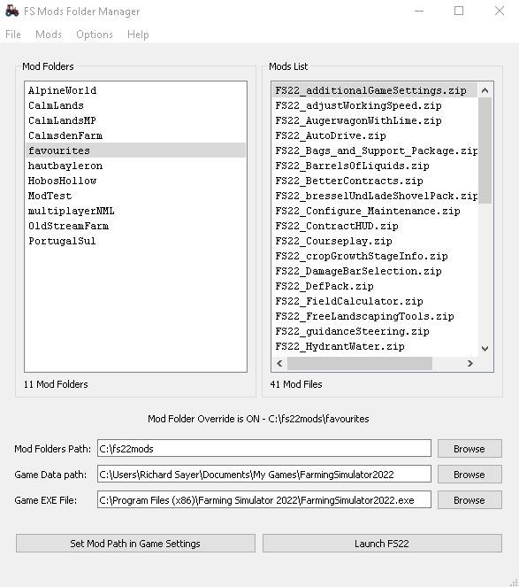

Farming Sumulator Mods Folder Manager
Manage your mods by using
seperate directories for different maps
This helps to avoid having any conflicts from having multple
maps in your mod folder or mods you don't need for the game you are
playing. It is especially useful if you
have multiplayer games as you can install only the mods required for
the server.
This application uses the subfolders in the "Mod Folders Path" to store
the mods you wish to use for the map you are playing.
It updates the attributes in the modsDirectoryOverride
tag in the gameSettings.xml file, located in the "Game Folder Path", to
use the selected folder when the game is launched.

File Locations
Mod Folders Path
The location of the folder containing the seperate mod folders. These
are the items that appear in the "Mod Folders" list. Use the browse
button to set this value
Game Folder Path
This is the location of the game config data. This is usually in your
user directory, for example, "C:\Users\your_user_name\Documents\My
Games\FarmingSimyulator2022". Use the browse button to set this value
Top
Menus
The File Menu
Exit
Closes the mod folder manager application.
The Mods Menu
The "Mods" menu allows you to carry actions to the mods and there
containg folders.
Add Folder to List
Adds an empty folder to the mod folders path using the file
open
dialog
box which will allow you to navigate to and create a new folder. The
list is updated and if a new folder is created it will be selected in
the list.
Remove Selected Folder
Removes (deletes)
the highlighted folder in the "Mod Folders" list (and all of its contents)
from the mod folders path. This can also be done by right clicking a
folder in the list.
Add Mod to List
Adds a mod zip file to the "Mods List" using the file open dialog to
locate and select the mod file. If a file is selected it will be copied
to the folder, added to the "Mods List" and selected.
Remove Selected Mod
Removes (deletes)
the
highlighted mod file from the folder an removes it from the "Mods
List". his can also be done by right clicking a mod file in
the
list.
Copy Mods to Current Folder
This will launch the "Open FIles" dialog so you can select the file(s)
you wish to copy to the selected directory
Top
The Options Menu
The "Options" menu is where the option settings can be found .
Double CLick Folder to Launch
Checkable menu item. If checked then double clicking a mod
folder will set the path in the gameSettings.xml file and lauch FS22
Mod Folder Override Active
Checkable menu item.Sets the value for the gameSettings.xml file to
True if checked. If you want to override the games defuault mod folder
the option must be checked.
Ask Before Updating XML
Checkable menu item. This option is there to prevent you from updating
the file when you do not want to. If checked a message box asking if
you want to update the gameSettings.xml file before the application
makes any changes.
Show Options
Opens the options file (config.ini) in a text editor. For Windows it
will be Notepad.
Top
The Help Menu
Help
Opens this help file in a browser
About
Displays the application about box
Top
Buttons
Set Mod Path in Game Settings
Use this button if you want to update the gameSettings.xml file without
launching the game.
This will update the gameSettings.xml file in the "Game Folder Path"
with the values of "Mod Folder Override Active" under the "Options"
menu
(True idf checked) and the "Mod Folders Path". If the "Ask
Before Updating XML" value under the "Options" menu
is not checked it WILL NOT ASK before updating the file.
Launch FS22
Use this button if you want to launch the game without update the
gameSettings.xml file.
This button launches the game from the path set in this applications
config.ini file. The default value is GAME_EXE=C:\Program Files
(x86)\Farming Simulator 2022\FarmingSimulator2022.exe but
if, for example, you isntalled it from Steam you will need
to update this path C:\Program
Files (x86)\Steam\steamapps\common\Farming Simulator
2022\FarmingSimulator2022.exe before you start the
application. You can do this with any text editor such as notepad.
If you want to update the gameSettings.xml file and launch the game
both at once
make sure the "Double Click Folder to Launch" option under the
"Options" menu is checked and simply double click the folder you want
to use
in the game. If you do not want the "Are you sure..." message box to
appear uncheck the "Ask Befor Updating XML" option under the "Options"
menu
Top